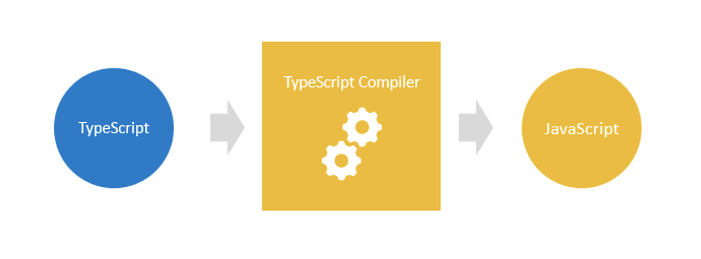

AGENDA
- Introduction
- Features
- Usage in RN project
WHAT IS TYPESCRIPT?

ADVANTAGES
- Supports static typing
- Makes code easier to read and understand
- Proin ut est pretium, ultrices
-
Helps to avoid a lot of painful bugs thanks to type checking in
the code
-
Encourages developers to follow best OOP practices
- As a result - saves developer's time
WHY AND WHEN TO USE TYPESCRIPT?
- You have a large codebase
- One developer can make critical changes
-
Your team's developers are already accustom to statically-typed
languages
- You really feel the need for speed
-
Encourages developers to follow best OOP practices
- As a result - saves developer's time
BASIC TYPES
COLLECTIONS
READONLY COLLECTIONS
TURPLES
FUNCTIONS
ENUM
TYPE ALIAS
TYPE ALIAS - overview of setting typescript aliases
TODO
UNIONS
INTERFACE
INTERFACE
INTERFACE
INTERFACE
GENERIC
Usage in RN project
npx react-native init MyApp --template
react-native-template-typescript
RN потенциальные ошибки пример демонстрация пользы?